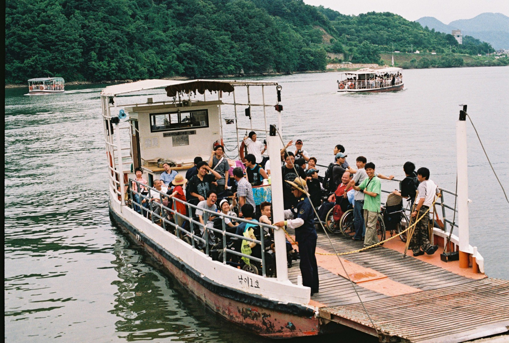
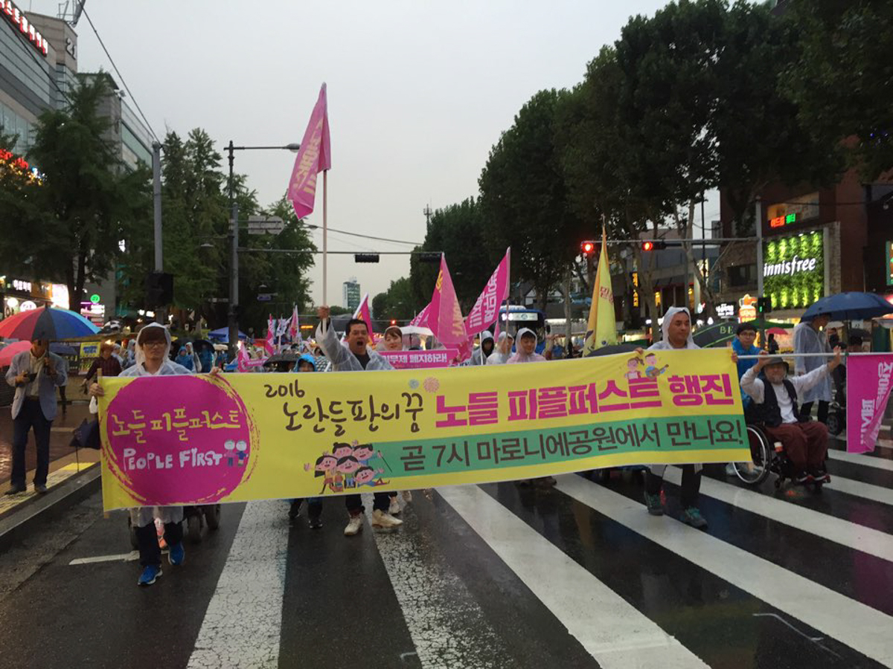

본격적인 행사에 앞서 노들야학의 30주년을 대표할 수 있는 슬로건을
정해보고자 했습니다. 30주년을 맞이한 노들야학이 야학의 안과 밖
사람들에게 꼭 이야기하고 싶은 진솔한 내용을 짧은 문구로
표현해보는 것이었죠. 그렇게 지난 3월 한 달 동안의 슬로건 공모를
통해 야학 학생, 교사, 활동지원사 등은 물론 야학 안밖의 많은
분들에게서도 여러 다양하고 소중한 의견들을 들어볼 수 있었습니다.
그 결과 개성 넘치고 재밌기도 혹은 사뭇 진지하디도 한 여러
제안들이 많았습니다. 그 중에서도 특히 청솔 3반 최원균 학생이
응모한
“노들오래대다노들좋다노들쭉가자”가 번뜩 모두의
눈과 귀를 사로잡았습니다.
사실 원균의 슬로건은 맞춤법도 띄어쓰기도 다소 틀린 문장이지만,
슬로건 속 원균의 당찬 목소리와 야학을 아끼고 좋아하는 마음이
너무나 잘 느껴진다고 생각했어요. 직접 입으로 연이어서 말해보면
마치 구호 같기도 하구요.
그리고 실제로 야학의 30주년과 다 뜻이 통하고 연결되는 말들이기도
해요. 말그대로 노들은 오래되었고, 노들은 좋고, 앞으로도 노들이
쭉 가길 우리 모두가 바라니까요.
그렇게 모두의 의견이 만장일치가 되어
“노들오래대다노들좋다노들쭉가자”가 빠르게 올 한해 노들야학의
30주년을 대표할 슬로건으로 선정되었습니다.
올해 여러 행사들 속에서 우리의 슬로건이 더욱 그 빛을 발하길,
당사자의 당당한 목소리로 외쳐지길, 그리고 다들 흠뻑 좋아해주시길
바래봅니다.
(+)(–)
사진 한 가운데 정체를 알 수 없는 포즈(?)를 취하며 기뻐하고
있는 사람이 이번 30주년 슬로건의 주인공 청솔 3반 최원균
님입니다. “노들오래대다노들좋다노들쭉가자!” 원균님의 슬로건
모두 좋아해주실 거라 믿어요!
노들 노래 공장(노노공)은 노들 야학의 권리중심 중증장애인맞춤형
공공일자리에서 일하는 노동자들이 2022년 2월부터 매주 한 번 함께
모여서 노래를 만드는 곳입니다. 노노공의 기조는 “우리의 노래
우리가 만든다“로, 하고 싶은 이야기를 노래라는 방식으로, 스스로
노랫말과 가락을 지어 부른다는 목표를 가지고 있습니다.
노노공에서 만든 노래와 악보, 음원, 영상을 보실 수 있고, 노노공
소개와 구성원들 소개도 담겨있어요. 매주 노래를 만드는 노노공에
신청곡을 의뢰할 수도 있으니, 꼭 한번씩 들어오셔서 노래도
들어보시고 노래도 신청해주세요.
노래는 만들때마다 새롭게 업데이트 됩니다!
📰
한국 장애해방운동의 상징과도 같은 노들야학은 개교 30주년을 맞아
이미 이곳저곳에서 많은 주목을 받고 있답니다! 이번 30주년
소식지에서는 지난 4월 24일 한겨레 신문에 실린 천성호, 김명학 두
공동교장 선생님의 인터뷰 기사, 그리고 노회찬 재단과 한겨레신문이
공동기획한 ‘6411의 목소리’에 천성호 공동교장 선생님이 기고하신
2편의 글을 공유드립니다.
“유감스럽게도 없어요. 나를 교장 선생님이라고 부르면 너무
쑥스러워 명학이 형이나 학생이라고 부르라고 해요.”
2021년 3월 천성호 활동가와 함께 노들장애인야학(노들) 4대 공동
교장으로 선출된 김명학씨에게 지난 2년 교장으로 일하며 가장
기억에 남는 일이 뭐냐고 하자 나온 답이다. 노들의 최장기
재학생이기도 한 그는 나지막하지만 또박또박하게 말을 이었다.
“학생·상근자들과 함께 집회에 나가 우리 목소리를 직접 사회나
정부에 대고 외칠 때 가장 좋죠. 내가 살아 있다는 것을 느낍니다.”
이 말에 천성호 교장은 “명학이 형은 1년에 적어도 100번 이상은
집회에 나갑니다”라고 거들었다. 김 교장은 집회나 인터뷰 등 장애인
권익옹호 활동에 주로 힘을 쏟고 천 교장은 학교 재정이나 관리를
맡는단다.
어려운 가정 형편 때문에 검정고시로 뒤늦게 들어간 대학 시절부터
야학 교사로 살아온 천 교장은 ‘노들의 비티에스(BTS)’로 불린다. 김
교장이 그 이유를 들려줬다. “다정하게 학생들에게 관심을 갖고
챙겨주니까요.” 지난 19일 서울 혜화역 근처 노들 사무실에서 두
공동 교장을 만났다. 오는 8월 8일은 노들장애인야학이 서울 광진구
정립회관에서 첫발을 뗀 지 꼭 30년이다.
김명학
30년간 휴학 안한 최장기 재학생
“내 주체관 변한 게 가장 큰 배움”
연간 100번 이상 집회 참가하며
장애인 권익옹호 활동에 힘 쏟아
“장애인 정책은 예산·의지의 문제”
어릴 때부터 뇌병변 장애로 휠체어에 몸을 의지해온 김 교장은 30대
중반에 노들에서 처음 공부를 시작했다. 노들이 문을 열고 3개월쯤
지나 수업을 듣기 시작한 그는 10여년 전 초·중·고 검정고시를 모두
통과했다. 지난 30년 단 한 차례도 휴학하지 않았단다. “한 번 쉬면
습관이 될 것 같았어요. 노들은 나에게 장애인으로 어떻게 사는 게
우리 권리를 갖는 것인지 생각하게 해주었어요. 장애는 가족이
아니라 국가의 문제라는 것도 알려주었어요.”
노들에서 가장 크게 배운 게 뭐냐는 질문에는 “내 주체관이 변한
것”이라고 김 교장은 답했다. “그 전에는 우물 안 개구리였어요.
지금도 답답한 감은 있지만요. (노들에서) 우리가 끊임없이 요구하고
싸우면 사회가 조금씩 변한다는 것을 알게 되었죠. 우리가 싸우지
않으면 사회는 변하지 않아요. 우리 사회는 비장애인 위주입니다. 저
같은 중증장애인이 살아가려면 사회가 변해야 합니다. 사회 환경이
바뀌어야 장애인과 비장애인이 사회의 한 구성원으로 함께 살 수
있어요.”
그의 전임자인 박경석 전국장애인차별철폐연대(전장연) 상임대표는
무려 24년 동안 노들의 교장이었다. 김 대표는 취임식 때 봉투에
24만원을 담아 ‘박경석 동생’에게 ‘용돈’을 줬다. 노들을 만나기 전
‘재가장애인’이었던 자신에게 ‘주체관의 변화’라는 큰 선물을 안긴
‘동생’에 대한 고마움의 표시였다.
노들은 한국 장애운동의 받침돌로 불린다. 2001년 오이도역에서
일어난 휠체어 장애인의 리프트 추락사가 기폭제였다. 그 뒤로
박경석 교장과 이 학교 학생들은 거리로 나와 이동권 등 장애인 권리
확보를 위한 목소리를 내기 시작했고 사회는 더디지만 조금씩
변했다. “저상버스와 장애인 콜택시, 활동지원사, 장애인 권리 확보
중심의 공공일자리 등이 노들 학생들이 중심이 되어 싸운
결과이죠.”(천 교장)
천 교장은 노들 재학생 80여명 중 많을 때는 30여명이 장애인 권리
옹호 활동에 참석한다고 했다. “전장연 집회에 노들 학생과 교사가
많이 참여해요. 장애인 단체 중 가장 열심이죠.” 그는 노들 재학생은
뇌병변 장애인이 약 30명, 발달 장애인이 약 35명이며 기타 장애
유형이 10여명이라고 했다.
천성호
늦깎이 대학생 때부터 야학 활동
박경석 전 교장 권유로 노들 합류
다정한 관심에 ‘노들 BTS’로 불려
장애인야학 90년대 2곳서 50곳↑
“소외 있는 한, 야학 역할은 계속”
탄광 노동자의 아들로 태어난 천 교장은 만 24살에 사회학 전공
대학생이 됐다. 대학 입학 전에 봉제나 기계 제작 공장에서 3~4년
일한 그는 대학 때부터 야학 활동에 나섰다. “제가 어렵게 대학에
들어가, 가정 형편이 어려운 학생들에게 도움이 되면 좋겠다는
생각이었죠.” 그는 서울 구로섬돌야학과 난곡 남부야학에서 약 10년
가르쳤고 서울지역야학협의회와 전국야학협의회 활동도 했다.
2009년에는 [한국야학운동사-자유를 향한 여정 110년]을 출간하기도
했다.
그는 지난 노들 교장 선거 때 ‘배움과 투쟁, 노동’을 슬로건으로
내걸었다. ‘왜 배움에 투쟁이 필요할까’ 묻자 그는 야학 경험으로
얻은 깨달음이라며 이렇게 답했다. “처음 야학에서 가르친 학생들이
구로공단 봉제공장 노동자였는데요. 야학 공부 뒤에도 이분들의 삶에
변화가 거의 없더군요. 대학 진학자도 거의 없었고, 잘 가도 방송대
정도였죠. 좋은 직장에 들어가는 학생도 없었죠. ‘왜 그럴까’ 답을
찾다 불평등에 관심을 갖게 되었죠.”
그가 박경석 전 교장 권유로 2010년 노들과 교사로 인연을 맺고 8년
뒤에는 상근활동가가 된 것도 이런 생각이 영향을 미쳤다. “다른
야학도 중요하지만 장애인 야학에 더 시급하고 위급한 문제가 있다고
생각했죠. 권리가 배제되고 무너진 삶들이 보였거든요. 장애인
야학에서 학생들과 함께하는 게 더 의미가 있다고 봤죠.”
교장이 된 뒤에도 발달장애 학생들에게 ‘자기 권리 표현’을 주제로
수업을 해왔고 이번 학기에는 영어 수업을 맡은 천 교장은 “노들에서
오히려 많은 힘을 얻는다”고 했다. “제가 보기에 노들 학생들은
건강하고 예쁘고 자신의 삶을 아름답게 꾸미는 분들입니다. 여기
와서 뭐라도 배우려고 노력하고 투쟁도 열심히 하면서 자기 스스로의
삶을 만들어 가는 분들이죠. 그런 모습을 보면서 힘을 많이 얻어요.”
천 교장에게 요즘 노들의 미래를 위해 가장 고심하는 게 뭐냐고
물었다. “장애인들이 자기 권리를 찾을 수 있는 데 노들의 역할이
뭔지 많이 생각해요. 노들은 장애인 문제와 별개가 아니거든요. 30년
가까이 장애해방운동을 가장 열심히 해온 곳이죠. 이런 정체성을
지켜나가는 게 노들의 가장 중요한 역할이죠. 그리고 30년 행사를
아름답게 꾸미는 것도요.” 같은 질문에 김 교장은 “예산”이라고 답한
뒤 덧붙였다. “(노들 학생 중) 휠체어 장애인들이 많아 몇 명만 와도
공간이 차요. 더 넓은 데로 옮기면 좋겠는데…” 천 교장은 현재 노들
공간 임대료의 20%인 연 5천만원 이상을 노들이 자부담하고 있다고
밝혔다. “노들 후원자는 약 1천명입니다. 상근 활동가 15명에 수업만
하는 교사가 20명 더 있죠.”
김 교장은 30년 가까이 노들 동지와 투쟁하면서 장애인 정책은
“예산과 의지의 문제”라는 걸 깨달았단다. “(정책 당국이) 돈과
의지만 있으면 안 되는 게 없어요. 우리가 서울 지하철
동대문역사문화공원역 엘리베이터 설치를 요구했을 때 서울시는 건물
구조상 안 된다고 고개를 저었는데 결국 2015년에 설치했어요.
우리가 싸워 얻은 이 엘리베이터를 지금은 비장애인들이 잘 이용하고
있어요.”
인터뷰를 마무리하며 야학 활동가이자 야학 연구자이기도 한 천
교장에게 ‘한국 사회와 야학’에 대해 물었다. “90년대 야학할 때는
2천년대가 되면 야학이 없어질 거라고 생각했어요. 그런데
2천년대에는 문해 교육 야학이 생기더군요. 그 뒤에는 이주여성 문해
교육이 나왔고 그다음 들어온 게 장애교육이죠. 90년대에 장애인
야학이 두세 군데였는데 지금은 50개가 새로 만들어졌어요. 비장애인
야학은 100군데에서 50군데로 줄었죠. 한국에서 야학은 소외되고
변방으로 밀린 사람들이 배움을 통해 삶을 만들고 자신들의 권리도
만들어 가는 곳입니다. 앞으로도 그런 역할은 계속될 겁니다.”
노들장애인야학은 교사보다 학생이 먼저 와서 기다리는 학교다. 실제
지하철 출근길에 야학에 먼저 와있는 학생 전화를 종종 받는다. 나는
“노들로 가고 있어요. 있다가 봐요” 하고 걸음을 재촉한다. 야학인데
아침부터 학생들이 오는 이유는 발달장애 학생들이 시간을 보낼 곳이
없거나, 오후 야학에서 운영하는 공공일자리에 참가하기 위해서다.
2001년 이동권 투쟁으로 시작된 야학에서는 중증장애인 권리 투쟁과
더불어 주간에는 탈시설 장애인을 모아 ‘자립생활교육’을 진행했다.
‘들판의 학교’, ‘거리의 학교’, ‘투쟁하는 학교’라는 정체성을
담아내야 했고, 그래서 2013년 ‘야간학교(夜學)’에서
‘야학(野學)’으로 이름을 바꿨다. 야학에서 교사는 학생과 함께
배움과 권리를 깨치며 장애운동의 ‘밑불이 되고, 불씨가 되는’
역할을 한다.
노들장애인야학이 문을 연 1993년 당시 초등학교 졸업 미만 장애인이
60% 정도였다. 2021년 장애인실태조사에 따르면, 그 수치는 37.5%로
줄어들었다. 고등학교 졸업 30.5%, 대학 졸업 비율 14.3%로
조사됐다.
하지만 학교에 못 간 장애 성인이 평생교육에 참여한 비율은 비장애
성인의 40분의 1도 되지 않는다. 장애인이 배움에 관심이 없어서가
아니다. 학교로 이동할 수 없고, 배울 학교도 없었기 때문이다.
장애가 있고 배움의 속도가 다른 학생과 함께 할 교사가 필요했다.
또한, 장애 학생의 고유한 몸과 행동과 소리, 몸짓이 비정상이라는
편견과도 맞서야 했다. 사회적 차별과 맞서 싸우는 교육이 필요했다.
내가 야학교사를 자원했던 2010년이나 지금이나 교사들 노동시간은
여전히 길다. 하루 8시간 노동이 규정돼 있지만, 저녁 야학수업이
9시에 끝나니 그때까지 지켜야 한다. 토요일 교사회의, 주말 각종
집회 참석 등으로 지치기도 하지만, 장애 학생들의 권리를
지켜낸다는 믿음으로 버틴다.
그간 중요한 변화라면, 중증장애인 학생들의 공공일자리가 만들어져
발달장애 학생들이 참여한다는 점이다. 장애 학생들은 일자리가 없어
보호작업장을 전전하며 하루 6시간 일하고도 한달 20~30만원을
받았다. “선생님, 점심값과 교통비를 빼면 한달 10만원도 안 돼요.”
최저임금법(7조)에는 ‘장애인은 일할 수 없는 사람이니 최저임금은
주지 않아도 된다’라고 명시돼 있다. 이렇게 9만명 넘는 장애인들이
보호작업장에서 노동권과 인권을 부정당했다.
그래서 2020년부터 야학은 ‘서울형 권리중심 중증장애인 맞춤형
공공일자리’ 사업을 추진해 학생들이 ‘문화예술 활동’, ‘권리옹호
활동’, ‘장애인식 개선 활동’에 참여할 기회를 제공했다. 학생들은
“평생 일을 할지도, 월급을 받을지도 몰랐다” “일하러 간다고
남들에게 말할 수 있어서 좋았다”라고 말한다. 1년 계약직인
공공일자리도 야학이 3개월간 한국장애인고용공단을 점거하고
싸우면서 노동에서 배제된 장애인 ‘몫의 일부’를 얻어낸 결과물이다.
야학에 중중장애인이 많이 다니는 이유는, 탈시설 장애인이 많이
입학했기 때문이기도 하다. 2000년대 뇌병변 장애인들이 탈시설을
시작해 2010년을 넘어가면서 발달장애인 탈시설이 이뤄졌다.
발달장애는 특성상 모두가 중증장애인이다. 야학은 시설에서 10년,
20년, 30년 만에 처음 ‘사회’로 나와 배움이 필요한 이들에게 문을
열었다. 야학의 절반 이상이 탈시설한 학생들인데, 다시 시설로 가고
싶다는 학생은 없다. “여기엔 자유가 있잖아요. 하고 싶은 것 하고,
먹고 싶은 것 먹을 수 있어 좋아요. 옷도 사 입을 수 있어서 좋아요.
혼자 있어서 좋아요.”
2021년 12월 아침 8시 혜화역에서 지하철 선전전을 시작해 벌써
1년6개월이 넘어간다. 처음에는 야학 상근활동가와 교사 위주로
참여하다 지난해 중순부터 함께하는 학생들이 점점 늘어나고 있다.
노들장애인야학이 만들어지고 지금까지 이 사회에서 장애인이
살아가는 데 필요한 모든 것들이 여전히 변하지 않고 있다. 지하철
승차장에서 “이동하고, 교육받고, 노동하고, 지역사회에서 함께
살자”라고 23년째 외치고 있다.
장애인들은 6411번 버스를 타지 못했다. 장애인은 투명인간, 목소리
없는 사람들, 배제된 사람들이었다. 비문명적·비장애인 중심 한국
사회에 맞서 야학은 천천히, 조금씩, 세상과 맞서 싸워나가고 있다.
노들장애인야학은 올해 8월이면 개교 30주년을 맞는다. 장애인의
권리를 찾기 위해 싸워온 30년은 장애인이 비장애인과 ‘함께 살고자’
외친 30년이기도 하다. 앞으로 우리 야학은 장애인을 포함해 모든
이들의 자유와 평등을 노래하며 투쟁해 나갈 것이다.
“우리는 모두 노들의 일부이다”라는 말을 “그러니 우리가 노들의
전부이다”라는 말로 바꾸면 가슴이 벅차다. (노란들판의 꿈 p.8)
1993년 8월 8일, 노들야학이 개교했습니다.
정립회관에서 공부를 시작해 거리 위 천막, 주차장을 지나
혜화동으로 오기까지 노들야학은 누군가에게 기쁨과 힘듦이었고,
머무름이었고, 지나가는 바람이었고, 인생이었을 것입니다.
2023년 8월 8일,
노들야학은 책 속의 배움을 넘어 비장애인 중심의 사회를
이동시키고, 세상의 기준을 변화시키기 위한 시도들을 이어가고
있습니다. 세월이 빠르게 지났지만 그 세월은 수많은 벗들이 함께
지켜왔기에 가능했던 일입니다.
노들야학 30주년, 다시 한번 노들야학의 일상에 초대합니다.
일시 : 2023년 8월 8일 (화) 오후 6시 30분 - 오후 9시
장소 : 노무현시민센터 B2 다목적홀 가치하다 문의 :
02-766-9101 (박유리) 식사는 당일 노들야학 정기후원 신청
또는 20,000원 이상의 모금에 참여해주시면 도시락을 무료로
드립니다.
2023년 노들야학의 30주년을 맞아 노들에스쁘와 멤버들이
마로니에공원 가운데에 커다란 춤의 동그라미를 만들어놓고,
지역사회 이웃들을 초대합니다. 노들에스쁘와는 매주 화요일
노들장애인야학에 모여 춤과 움직임을 탐구하는 팀입니다.
멤버들은 장애인거주시설과 집 안에서 오랫동안 고립되어 지내온
이들로, 2017년부터 무용 단체 쿨레칸과 함께 노들에서 워크숍을
진행해왔습니다. 2020년부터 서울형 권리중심중증
장애인맞춤형공공일자리 사업의 문화예술 노동자로 전환해, 본격적인
문화예술 캠페인을 진 행하고 있습니다.
노들에스쁘와 멤버들이 7년째 춤 워크숍에서 진행하고 있는
‘커뮤니케이션 써클’을 마로니에 공원에 옮겨와 진행합니다. 올해
4번, 다양한 발달장애인 공연팀과 뮤지션을 초청해 시민과 함께하는
장을 만들려고 합니다.
지난 7월 22일 토요일 오후 4시 종로구 마로니에 공원 한 가운데서
[어라운드 마로니에]의 첫 선을 보였습니다. 공연을 앞두고 갑자기
많은 비가 내려 마음이 조마조마했지만, 다행히 공연 시작 직전 비가
그쳐 잘 시작할 수 있었답니다.
그리고 이 날 공연은 특별히 노들에스쁘와의 공연 앞뒤로 두 팀의
초청공연도 있었습니다. 하와이안 훌라를 통해 사랑과 평화의 메시지
“알로하(Aloha)”를 손동작과 온몸으로 전하는 발달장애청년허브
사부작 사회적협동조합의 “선샤인아놀드훌라”! 그리고 아프리카
만뎅의 톡 쏘는 매력을 루츠와 밴드를 자유로이 넘나들며 펼쳐보이는
팀, “젬베콜라”가 함께해주었습니다.
다음 공연은 9월 2일 토요일 마로니에 공원에서 열릴 예정입니다!
우리 모두 함께 즐거운 춤을 춰봐요.
💌
노들장애인야학 유튜브 구독 & 좋아요
☼ 노들야학이 올해 서른이 되었습니다!
노들야학은 유튜브에 매달 권리중심 일자리 활동 정리 영상,
노들노래공장 노래 영상 등이 업로드됩니다:)
지난 6월 17일 토요일, 지하철 1호선 대방역 근처
서울여성플라자에서 [2023년 노들 문해 인권 체육대회]가
열렸습니다. 매년 야학에서는 각종 퀴즈와 게임이 어우러진 문해인권
체육대회를 진행해왔는데요. 올해는 특별히 더운 날씨 속에서 야외가
아닌 실내에서 진행되었 습니다.
또 이번 체육대회는 여러 지하철 노선들과 역들을 컨셉으로
재작년부터 이어진 장애인 권리 입법과 예산 확보 투쟁, 삭발 투쟁
등에 대한 재밌는 퀴즈들과 경기들이 많이 준비되어 있었습니다.
즐거운 체육대회가 끝난 이후에는 맛있는 저녁 식사와 함께
학생분들의 노래자랑도 이어졌습니다.
그리고 올해 체육대회에도 여러 자원교사, 수업지원교사분들도 함께
해주셨는데요. 그 가운데 캠코더를 들고 누비며 체육대회의 장면
장면들을 담아준 재경님도 계셨습니다. 재경님은 지난 1학기 동안
서예 수업의 수업지원교사로 참여해주시면서 야학과 처음
만났는데요. 체육대회가 끝난 후 재경님이 직접 편집해서 보내주신
빈티지 감성 가득한 체육대회 영상 기록과 편지를 전해드려요!
큰 기대와 설렘을 안고 처음 방문했던 노들은 상상 이상으로
따뜻하고 정겨웠습니다. 올해 초 자연스레 시작된 인연, 늘 어색하고
부끄럽지만 저를 선생님이라 불러주시는 분들과의 몇 개월 덕분에
많은 것을 느끼고 배웠습니다.
매일같이 일과 수업을 병행하며 각자의 위치에서 최선을 다해
살아가고 있는 사람들, 내가 이들에게 도움이 되어야 한다는 마음이
그저 내 얄팍한 지식과 경험에서 비롯한 잘못된 생각이었다는 것을
깨닫는데 그리 오래 걸리지 않았습니다.
현장에 모여 게임을 즐기고 이기기 위해 승부욕을 불태우는 사람들,
이에 적잖게 상기된 얼굴들과 그들을 바라보며 웃고 떠들고
즐거워하는 사람들. 내가 어떤 마음으로 이 행사에 참여해야 하는지,
어떤 태도로 학생들을 대해야 하는지에 대한 고민은 금새 잊히고
어느새 저도 그 웃음 한가운데 있었습니다.
조금도 어색하지 않았습니다. 누구보다 깨어있고 타인의 장애에 대해
다름없이 대하는 척하면서도 그동안 채 버리지 못했던 갖은 편견들이
무의미해졌고, 무언가 알 수 없는 개운함에 마음이 가벼워짐을
느꼈습니다. 그리고 괜히 내가 괜찮은 사람이 된 것 같은 기분에
들뜨기도 했습니다.
체육대회 면면을 영상으로 기록하며 처음으로 학생들의 표정을
유심히 보게 되었습니다. 하루아침에 생겼을 리 없는 끈끈한 유대와
서로에 대한 믿음, 자연스레 배어 있는 존중과 배려를 마주하며 나도
더 나은 사람이 되어야겠다는 다짐과, 짧은 여름방학을 마치고
학교에 돌아가 새롭게 마주하게 될 모든 풍경들을 더 섬세하고
꼼꼼하게 관찰하고 싶다는 생각이 들었습니다.
모든 것이 처음이었고 그래서 더 뜻깊을 수 있었던 시간. 초대해
주신 모든 분들께 감사드립니다.
💌
야학의 일상: 다큐 [거리의 질감] 공동체상영
지난 6월 27일 화요일 오후 5시, 2023년 노들야학의 여름방학식이
열렸습니다. 매 학기가 끝날 때마다 노들야학에서는 한 학기를
되돌아보고 서로 소감과 인사를 나누는 시간을 가지고 있습니다.
특히 이 날은 방학식의 사전행사로 장애인 이동권 다큐 [거리의
질감]을 함께 보고, 제작진 및 출연진과 함께 이야기 나누는 조금은
특별한 시간을 가져보았습니다.
다큐 [거리의 질감]은 도시/환경/문화다양성 문제에 문제의식을 가진
창작 집단 리슨투더시티가 제작하고 광주광역시
국립아시아문화전당에서 전시 및 상영된 약 15분 가량의 영화입니다.
다큐 [거리의 질감]은 비장애인 중심으로 만들어진 도시를 향해
질문합니다.
작품은 지금 도시의 길과 골목이 다양한 사람들의 삶을 돌보고
담아내기에 충분한 공간인지 되돌아봅니다. 지금, 당신이 발 딪고 사
있는 도시에서 비장애인은 장애인보다 더 특별한 권리를 누리고
있을지 모른다는 질문도 던집니다.
이러한 질문을 담은 다큐 [거리의 질감]에는 비장애인 중심의 도시와
관객을 향해 질문을 던지는 두 인물로 노들야학 동문이자 현재
이음장애인자립생활센터 소장인 애린님 그리고 2 노들야학
부총학생회장 상지님이 출연하셨답니다.
그래서 이 날 야학 모두가 다함께 영화를 같이 보고 다큐 제작을
맡으셨던 리슨투더시티의 은선님, 영화 음악을 맡으셨던 DJ 말립님,
그리고 직접 영화에 출연한 상지님 세 분과 이야 기를 나누는 시간을
가졌답니다!
은선님이 영화를 제작하게 된 계기에 대해서도 들어볼 수 있었고,
말립님이 직접 만든 음악들도 함께 감상해볼 수 있었어요. 또 영화에
출연했던 상지님의 소감, 그리고 노들야학을 진심으로 사랑하는
상지님의 마음도 느낄 수 있는 뜻 깊은 시간이었습니다.
💌
30주년 자료실 영상 추천: 박종필 감독 [버스를 타자!],
[노들바람]
지난 7월 28일은 故 박종필 감독님의 6주기였습니다. 박종필
감독님은 20여 년 가까이 영상 활동가로 활동하며 홈리스·빈곤 현장,
장애운동 현장 등에서 장애인과 가난한 사람들의 이야기를 영상으로
담아냈습니다. 2015년부터는 ‘4·16연대 미디어위원회’ 위원장을 맡아
세월호 참사의 진실을 기록하고 규명하고자 했지만, 안타깝게도 지난
2017년 49세의 젊은 나이에 간암으로 일찍 세상을 떠나시고
말았습니다. 가난하고 외롭고 세상 바깥으로 밀려난 이들의 곁을
항상 고집스레 지켰던 그에게 사람들은 ‘차별에 저항하는
영상활동가’라는 이름을 지어 주었습니다.
‘차별에 저항하는 영상활동가’ 박종필 감독님은 언제나 노들야학과
함께 하며 우리의 활동과 투쟁을 영상으로 담아준 든든한 동지이기도
했습니다. 특히 감독님은 지난 2001년 당시 오이도역 리프트 참사
직후 뜨거웠던 장애인 이동권 투쟁의 현장 속에서 거리와 야학을
오고 가며 [버스를 타자!-장애인 이동권 투쟁보고서](2002) 그리고
[노들바람](2003) 2편의 다큐멘터리 영화를 만들었습니다.
21년 전 제작된 이 두 편의 영화에는 당시 노들야학의 장애인 이동권
투쟁 현장과 거리와 교실을 오가며 당시 교사와 학생들의 일상과
경험, 고민들이 잘 담겨 있습니다. 그리고 비슷한듯 또 다른듯한 두
영상은 모두 오늘날 야학에 대한 소중하고 생생한 기록이자 역사가
되었습니다.
이러한 의미에서 올해 30주년을 맞은 노들야학은 박종필추모사업회의
협조를 얻어 두 편의 영상을 30주년 특별 홈페이지를 통해
공개합니다. 든든한 우리의 친구, 박종필 감독님이 담아준 소중한 두
영상을 보다 많은 분들이 함께 봐주시길, 그리고 오래도록
기억해주시기를 바래봅니다.
1) [버스를 타자!-장애인 이동권 투쟁보고서](2002)
영화는 2001년 1월 오이도역에서 장애인 노부부가 리프트를 타다가
추락해 사망하는 사건으로부터 출발한 장애인 이동권 투쟁 초기의
모습을 좇는다. 노들야학을 중심으로 모인 장애인 당사자들이 정부에
지하철 내 엘리베이터 설치를 촉구하며 철로를 점거하고, 저상버스
설치를 요구하며 버스를 점거했다. 그로부터 22년. 2001년
장애인이동권연대의 투쟁과 2023년 전장연의 장애인 이동권 시위를
둘러싼 혐오의 말들은 끔찍하게도 닮았다. 그러나 20년이 넘는 시간
속에서 당사자들은 비장애 중심 사회 구조에 굴복하지 않고 이
투쟁을 장애인의 전반적인 인권을 보장하기 위한 시민 운동으로
확장해낸다. 이제 장애인에게도 이동할 수 있는 권리를 보장하라는
외침은 이제 교육권, 노동권, 탈시설 권리와 이를 위한 권리 예산
확보에 대한 주장으로 연결된다. 오늘날 한국사회에서 가장 뜨거운
의제는 그렇게 시작되었다.
2) [노들바람](2003)
2001년 봄에 일어났던 오이도역 장애인 노부부 추락 사망사건 이후,
장애인 이동권을 위한 투쟁의 물결이 들불처럼 일어났다. 그
중에서도 노들장애인야학은 투쟁의 중심이자 선봉에 섰다.
노들야학의 학생과 교사들은 지하철 선로 점거투쟁, 버스 점거 투쟁
등에 목숨을 건 싸움을 시작했다. 또한 시청 앞과 서울역에서 천막을
치고 농성하며 시민들을 상대로 열악한 장애인의 이동권 현실을
알려나가고자 분투한다.
늦은 나이에 공부를 하고 싶어서 야학에 왔지만 장애인의 이동권을
위해 목숨을 건 투쟁에 나서야만 하는 현실. 그러나 거리에서의
투쟁이 활발해질수록 야학 내부에서는 학교의 수업 이 부실해지는
것에 대한 걱정과 우려의 목소리가 커진다. 수업이냐 투쟁이냐를
둘러싼 학생 들의 불만, 교사들 사이의 진지하고 날선 공방이
오간다.
카메라는 수업과 투쟁, 둘 중 어느 하나도 포기할 수 없는 학생들과
교사들의 깊은 고민을 충실히 담아낸다. 그 누구의 말도 표정도
마음도, 함부로 끊어내지 않고 하나하나 끝까지 담아낸 박종필
감독의 시선이 돋보이는 영화.
“휘몰아치는 거센 바람을 걸러주고 새싹과 작물을 지켜주는 밭담처럼
노들장애인야학을 함께 지켜주세요.”
노들야학이 개교 30주년을 맞이하여 노들방탄기금을 모금하고
있습니다.
노들야학 공간의 보증금이 매년 인상되고 있어, 아슬아슬 버텨내고
있습니다.
노들야학의 공간을 지킬 수 있도록 1년에 만원씩, 1년, 3년, 5년,
10년, 30년, 50년 ... 의 활동을 더해주세요.
1996년 4월,
장애인의날(장애인고용촉진걷기대회)
1997년 5월
서울경인지역장애인야간학교연합 출범식 조직
1997년, 서경장련
1998년 1월, 노들인의 밤
1998년 4월
월간 소식지 ‘노들바람’ 창간
1998년 10월
장애인교육권 확보를 위한 노들야학 사진전
“우리들의 이야기 - 장애인야학” (문화일보 갤러리)
1999년 1월
총동문회 출범 및 총회 개최
1999년 3월
특활 교육 시작(주1회 문화예술 교육)
1999년 5월
중증장애인의 이동지원을 위한 차량 운행 시작
중증장애인의 입학이 이어짐
1999년 5월
장애인교육권 확보를 위한 서명운동 진행
2000년 2월
홈페이지 오픈
2000년 5월, 강화도동막 모꼬지
2000년 5월
서울시 비영리민간단체 등록
2000년 5월
‘이규식씨 혜화역 리프트 추락사고(1999년 5월)’에 대한
손해배상청구소송 승소
2001년 1월
‘오이도역 리프트 추락 참사’가 발생하자 ‘오이도역
대책위원회’를 구성하여 대응
2001년 2월, 서울역 지하철 선로점거
2001년 3월
장애인인권다큐멘터리 '노들바람’ 제작(다큐인)
2001년 4월
장애인이동권쟁취를위한연대회의 간사단체로 참여
2001년 5월
‘서주현씨 서원대학교 입학거부사건(1999년 12월)’에 대한
손해배상청구소송 승소
2001년, 노들 봉고
2001년 5월
사무국 개소(종로구 명륜동)
2001년 8월, 장애인 이동권 투쟁
2001년 9월
장애인 인권 거리 사진전 개최(대학로)
2002년
2002년 4월, 정민학교 고입고졸 검정고시
2002년 6월
한글수학기초과정 개설
2002년 8월 - 9월
발산역 추락참사에 대한 서울시 공개 사과 촉구를 위한
국가인권위원회 점거․ 단식농성 참여(박경석 교장 39일간 단식)
2002년 9월
노들장애인자립생활센터 설립
2003년 7월
장애인교육권연대 출범. 공동대표 단체로 참여
2003년 3월 - 12월
장애인 자립생활 이념 확산 및 보급을 위한 자립생활 교육 진행
2003년, 투쟁
2004년 5월
장애인인권다큐멘터리 ‘노들바람’, 서울인권영화제 ‘올해의
인권영화상’ 수상
2004년 12월, 노들인의 밤
2005년 2월 - 2006년 6월
정립회관 민주화를 위한 공동대책위원회에 참여, 정립회관 점거
농성(231일간)
2005년 2월, 교사학생간담회
2006년 3월
장애인자립작업장‘노란들판’ 설립
2006년 3월 - 4월
활동보조서비스제도화를 위한 서울시청 앞 노숙 농성 및
중증장애인 39인의 집단 삭발 농성 참여(박경석 교장과 노들야학
학생 10명 삭발)
2006년 4월
EBS 똘레랑스 [노들학교 이야기: 휠체漁, 바다에 가다] 제작,
방영
2006년 7월 - 12월
성람재단 비리 척결과 사회복지사업법 전면 개정을 위한
종로구청 앞 노숙농성단 참여(143일)
2006년 3월 - 12월
커뮤니케이션 권리 확보를 위한 장애인 영상 미디어
교육(방송위원회 지원 사업)
2006년 12월
영상과 이야기가 있는 노래공연 ‘내 이름은 장애인’ 개최(우림
청담 씨어터)
2007년, 검정고시
2007년 - 2008년
전국장애인야학협의회 간사단체

2007년 6월, 남이섬 모꼬지
2007년 6월
정립회관으로부터 퇴거 요구를 받음
2007년 9월
전국장애인차별철폐연대 참여단체로 가입
2007년 10월
장애성인 교육권 확보를 위한 교육지원 대책마련 촉구 기자회견
및 노들야학 교육공간 확보를 위한 서명운동 시작
2008년 1월
정립회관 퇴거
2008년 1월
노들야학 교육공간 마련과 장애성인 교육권 확보를 위한
‘천막야학’ 진행(1월 2일부터 3월 21일까지 80일간)
2008년 1월, 천막 치던 날
2008년 2월
장애인극단 판 설립
2008년 3월
독자적 교육공간 마련(종로구 동숭동)
2008년 6월
시설장애인을 위한 ‘탈시설 학교’ 운영(3개월)
2008년 9월
‘연구공간 수유+너머’와 함께하는 현장 인문학 교육 시작
2008년 9월
장애인 인권교육 강사 양성 교육 및 파견 사업 시작
2009년 6월 - 8월
탈시설-자립생활 권리 쟁취를 위한 농성단 참여(63일)
2009년 6월, 서울시장 공관 앞 탈시설
1박 2일 농성
2009년 11월
장애인 무료 한방진료 ‘혜화 독립진료소’ 사업 시작
2009년 12월
서울시 교육청 ‘학교형태의장애인평생교육시설’ 등록(제 18호)
2010년 3월 - 12월
증장애인 고용을 위한 디지털프린팅 교육과 현장실습 인턴
프로젝트 ‘노란들판에서 희망을 Jab자’ 진행
2010년 9월
중증장애인으로 구성된 ‘노들 음악대’ 창단
2010년 9월, 해오름제
2011년 2월
사단법인 노들 창립 총회
2011년 4월 - 11월
탈시설장애인의 지역사회 통합을 위한 멘토 양성 프로그램 진행
2011년 8월, 대방동 여성플라자
2012년 7월, 양양 모꼬지
2012년 8월
장애인등급제 폐지․ 부양의무제 폐지를 위한 광화문역 무기한
농성단 참여
2012년 10월
시민들과 함께하는 장애인 인권 문화 축제 “열아홉번째
노란들판의 꿈” 개최(매년)
2013년 7월
‘노들장애인야간학교’에서 ‘노들장애인야학(野學)’으로 명칭
변경
2013년 9월
개교 20주년 기념 사진전 및 사진첩 「노란들판의 꿈」발행
2013년 10월
개교 20주년 기념 단행본 「지금이 나는 더 행복하다」(책으로
여는 세상) 출간
2013년 10월
개교 20주년 기념 행사 ‘노란들판의 꿈’ 개최
2013년 10월, 노란들판의꿈 개교기념제
노래자랑
2014년 3월, 서울구치소 현장 수업
2014년 4월
노들장애인야학 급식 시작
2014년 5월
개교 20주년 기념 단행본 「그럼에도 불구하고
수업합시다」(까치수염) 출간
2015년 4월
성인 발달장애인 평생교육 프로그램 “천천히, 즐겁게, 함께”
2015년 7월
노들장애인야학 [유네스코지속가능발전교육공식프로젝트]에
인정기관 등록
2015년 8월, 그린라이트
2015년 12월
노들장애인야학 교육공관 확장(종로구 동숭동)

2016년 10월, 노란들판의 꿈
2016년 11월
[묻지마 흥신소,광화문불나방] 아리랑아트홀 영화상영회 개최
2016년 12월
노들장애인야학 들다방 개설
2017년 2월
노들장애인야학 부설 노들장애학궁리소 개소
2018년 6월, 후원마당
2019년 10월, 노란들판의 퍼레이드
2020년 8월, 노들야학 27회 개교기념식
2021년 2월, 노들야학 교장 이취임식
※
매년 2회(4월,8월) 중입, 고입, 고졸 검정고시 응시
어라운드 마로니에 - 노들에스쁘와의 커뮤니케이션 써클
노들에스쁘와 소개
노들에스쁘와는 매주 화요일 낮 노들장애인야학에 모여 춤과
움직임으로 소통하는 프로그램의 이름이자, 참여하는 사람들을 부르는
말입니다. 2017년 노들장애인야학과 무용단체인 ‘쿨레칸’이 함께 춤
수업을 만들고 매주 만나기 시작했습니다. 젬베 연주에 맞추어 천천히,
즐겁게, 함께 움직이며 서로 알아나가는 시간을 보냈습니다. 그해
5월부터 장애인거주시설 인강원에서 생활하는 10여명이 화요일마다
노들야학의 봉고차를 타고 나와 두어시간 춤을 함께 추기
시작했습니다. 오랜 시간 세상과 단절되어 살아온 이들이
노들에스쁘와를 징검다리 삼아 다시 세상과 만나고, 춤을 통해 자신을
드러내고 표현하는 시간이었습니다. 그렇게 7년을 보내고, 이제 10명을
꽉 채워 타고 나오던 노들 봉고차 탑승객은 2명입니다. 한 분, 두 분
‘탈시설’해 지역사회에서 이웃들과 어울려 살기 시작한 것입니다.
노들에스쁘와의 멤버들은 2020년부터 서울시의 ‘권리중심
중증장애인맞춤형 공공일자리’ 사업의 노동자가 되었습니다. 이제
노들에스쁘와 노동자들은 우리가 함께 살아갈 세상 사람들을 향한
문화예술 캠페인을 준비합니다. 시민과 만날 자리를 기획하고, 어떤
공연을 통해 우리의 이야기를 전할지 매일같이 고민하고 연습합니다.
노들에스쁘와의 시간 속에서 우리는 서로의 움직임에 진동하며
변화해왔습니다. 어떤 춤은 나를 단단히 지켜주었고, 또 어떤 춤은 내
곁에서 함께하는 이를 알아볼 수 있게 하는 에너지가 되어주었습니다.
에스쁘와(Espoir)는 프랑스어로 ‘희망’을 뜻합니다. 평등과 존중, 더
나은 내일을 위한 희망이 이 이름에 담겨 있습니다.
어라운드 마로니에
2023년 노들에스쁘와는 마로니에 공원에서 ‘커뮤니케이션 써클’ 춤
공연을 선보이려고 합니다. ‘커뮤니케이션 써클’은 노들에스쁘와가
7년째 하고 있는 춤 워크숍의 내용으로, 참여자들이 둥그렇게 둘러
앉은 상태에서 가운데로 한두 명씩 나와 솔로, 듀오의 춤을 선보이는
형태입니다. 마로니에 공원은 노들야학을 오가는 길에 있어,
노들에스쁘와에게 매우 친숙한 공간입니다.
노들에스쁘와는 마로니에공원 가운데에 동그란 춤의 자리를 열어두고
지역사회 시민을 초청하려고 합니다. 올해 총 4번의 공연을
마로니에공원에서 진행할 예정이며, 다양한 발달장애인 공연팀과
뮤지션을 초청해 시민과 어울리는 장을 만들어보려고 합니다.
노들에스쁘와는 마로니에공원을 시작으로, 춤추는 동그라미를 점점
넓혀나가며, 삶의 지대를 확장해나가려고 합니다.
노들에스쁘와 팀 공연 이력
・2022, 연극 [등장인물], 세종문화회관 s씨어터, 서울시극단 기획,
신재 연출
・2022, 공연 [다음 이야기-장소], 성북분수광장, 성북문화재단 지원,
0set 프로젝트 기획
영화는 2001년 1월 오이도역에서 장애인 노부부가 리프트를 타다가
추락해 사망하는 사건으로부터 출발한 장애인 이동권 투쟁 초기의
모습을 좇는다. 노들야학을 중심으로 모인 장애인 당사자들이 정부에
지하철 내 엘리베이터 설치를 촉구하며 철로를 점거하고, 저상버스
설치를 요구하며 버스를 점거했다. (+)(–)그로부터 22년. 2001년 장애인이동권연대의 투쟁과 2023년 전장연의
장애인 이동권 시위를 둘러싼 혐오의 말들은 끔찍하게도 닮았다.
그러나 20년이 넘는 시간 속에서 당사자들은 비장애 중심 사회
구조에 굴복하지 않고 이 투쟁을 장애인의 전반적인 인권을 보장하기
위한 시민 운동으로 확장해낸다. 이제 장애인에게도 이동할 수 있는
권리를 보장하라는 외침은 이제 교육권, 노동권, 탈시설 권리와 이를
위한 권리 예산 확보에 대한 주장으로 연결된다. 오늘날
한국사회에서 가장 뜨거운 의제는 그렇게 시작되었다.
2001년 봄에 일어났던 오이도역 장애인 노부부 추락 사망사건 이후,
장애인 이동권을 위한 투쟁의 물결이 들불처럼 일어났다. 그 중에서도
노들장애인야학은 투쟁의 중심이자 선봉에 섰다.
(+)(–)노들야학의 학생과 교사들은 지하철 선로 점거투쟁, 버스 점거 투쟁
등에 목숨을 건 싸움을 시작했다. 또한 시청 앞과 서울역에서 천막을
치고 농성하며 시민들을 상대로 열악한 장애인의 이동권 현실을
알려나가고자 분투한다.
늦은 나이에 공부를 하고 싶어서 야학에 왔지만 장애인의 이동권을
위해 목숨을 건 투쟁에 나서야만 하는 현실. 그러나 거리에서의
투쟁이 활발해질수록 야학 내부에서는 학교의 수업 이 부실해지는
것에 대한 걱정과 우려의 목소리가 커진다. 수업이냐 투쟁이냐를
둘러싼 학생 들의 불만, 교사들 사이의 진지하고 날선 공방이
오간다.
카메라는 수업과 투쟁, 둘 중 어느 하나도 포기할 수 없는 학생들과
교사들의 깊은 고민을 충실히 담아낸다. 그 누구의 말도 표정도
마음도, 함부로 끊어내지 않고 하나하나 끝까지 담아낸 박종필
감독의 시선이 돋보이는 영화.


.jpg)